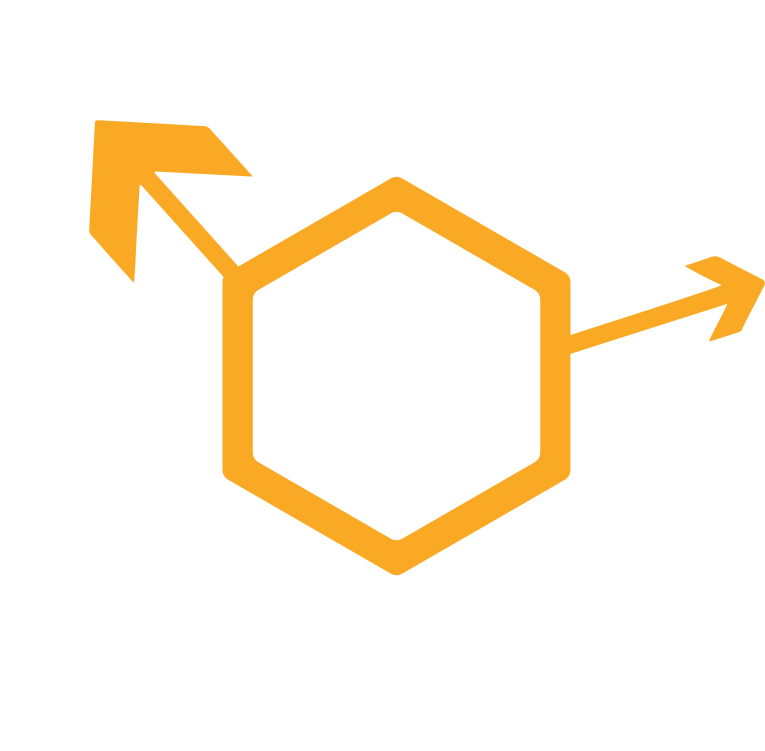

ProtoCat
Modern, minimalist type-safe gRPC framework for Node.js
![[object Object]](/protocat/img/feat-types.svg)
Delightfuly typesafe
Supreme TypeScript support for all gRPC call types, advanced type inference from generated code.
![[object Object]](/protocat/img/feat-foundation.svg)
Solid foundation
Modern small TypeScript codebase, with unit and integration tests. Protocat uses new pure JavaScript gRPC client @grpc/grpc-js.
![[object Object]](/protocat/img/feat-mdw.svg)
Modern middleware interface
Async middleware API with awaitable call stack cascade. Basic functionality like composition and on-error middleware.